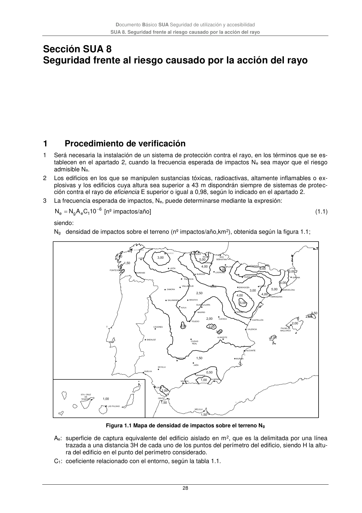

DB-SUA Seguridad de utilización y accesibilidad · edición 2022-06-14 · capa oficial
Documento DB-SUA-oficial · SHA-256 del PDF 3cfb5bbb135e8f02faebd8b844e03e8947994c18d4c9e675a7d2aa37d1cd5958
Página física 28 de 47.
Copia fiel del PDF fuente · Fuente oficial
Ficha de la disposición en la fuente oficial
Formato: Texto de la página (Markdown)
Documento Básico SUA Seguridad de utilización y accesibilidad SUA 8. Seguridad frente al riesgo causado por la acción del rayo 28 Sección SUA 8 Seguridad frente al riesgo causado por la acción del rayo 1 Procedimiento de verificación 1 Será necesaria la instalación de un sistema de protección contra el rayo, en los términos que se es- tablecen en el apartado 2, cuando la frecuencia esperada de impactos Ne sea mayor que el riesgo admisible Na. 2 Los edificios en los que se manipulen sustancias tóxicas, radioactivas, altamente inflamables o ex- plosivas y los edificios cuya altura sea superior a 43 m dispondrán siempre de sistemas de protec- ción contra el rayo de eficiencia E superior o igual a 0,98, según lo indicado en el apartado 2. 3 La frecuencia esperada de impactos, Ne, puede determinarse mediante la expresión: 6 1 e g e 10 C A N N [nº impactos/año] (1.1) siendo: Ng densidad de impactos sobre el terreno (nº impactos/año,km2), obtenida según la figura 1.1; Figura 1.1 Mapa de densidad de impactos sobre el terreno Ng Ae: superficie de captura equivalente del edificio aislado en m2, que es la delimitada por una línea trazada a una distancia 3H de cada uno de los puntos del perímetro del edificio, siendo H la altu- ra del edificio en el punto del perímetro considerado. C1: coeficiente relacionado con el entorno, según la tabla 1.1.
